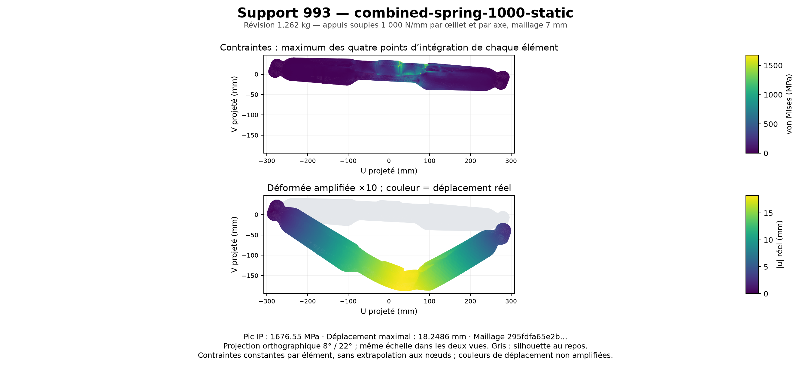

← Géométrie et couches · Calcul avec appuis rigides · Supports corrigés
La même pièce avec des appuis souples
Champs réels du calcul élastique sur la révision de 1,262 kg : effort vertical de −4 000 N, moment de 850 N·m et raideur totale de 1 000 N/mm par œillet et par axe, répartie entre ses nœuds. Maillage de calcul de 7 mm.

Pic élastique aux points d’intégration : 1 676,55 MPa. Déplacement maximal : 18,2486 mm. La silhouette grise représente la pièce au repos. La déformée est amplifiée ×10 ; les valeurs des couleurs restent réelles.
Cette hypothèse d’appui sollicite davantage la pièce que le cas rigide. Les pics élastiques servent à la comparaison des géométries ; ils ne définissent pas une contrainte admissible du titane. Le dossier conserve séparément l’étude non linéaire et son bilan énergétique.
Figure vectorielle · Données de la figure · Sources vérifiées et reproduction